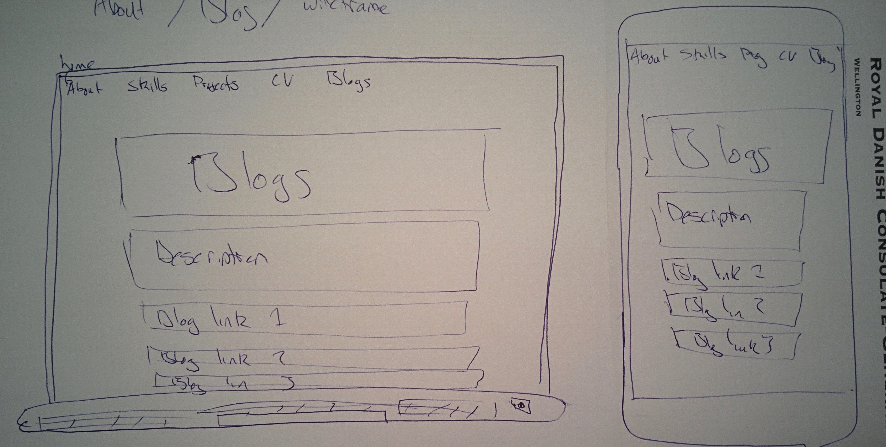

Design to Web
Oliver Stigley
9th of March 2016
Responsiveness
Reponsive web development is a must have for any project creating a website. There are so many visitors using mobile, tablets or other non-traditional viewing devices, that creating websites with no responsiveness may drive users away, because the user-exerience is lacking.
Reponsiveness refers to a website providing a suitable layout of information, depending on the viewing device. Good responsive design utilises space when it is limited, and makes the most of it when it is availble. Image, font and box resizing are important parts of responvie design, as well as toggling display properties to reduce clutter on small pages.
Mobile First
One preferred methodology to build responsive websites is to start out coding it for a small viewing device, then adding complexity for large devices. This is called a Mobile First approach. An added benefit of this being that smaller devices don't having to parse all the data required for a larger viewing device. Meaning the load faster for poeple that are likely using a mobile data connection, on a device with less processing power.
Frameworks
There are many existing CSS frameworks available for developers to use, that enable rapid easy front end prototyping. Bootstrap and Zurb are popular industry choices, but there are many more smaller easier to use tools, that offer less functionality but easier learning curves.
A framework provides classes, page grids, typographies and other design tools that are out of the box. This saves a developer from having to start frmo scratch, and re-inventing the wheel.
Wireframes
Wireframes are blueprints that outline the layout and basic visual functionality of a website. They establish hierarchy of information, provide a visual representation of a website without detail, and simplify brainstorming.
Here are some not so professional looking wireframes I made, for this website. I have visual design skills of an aquatically challenged manatee.
